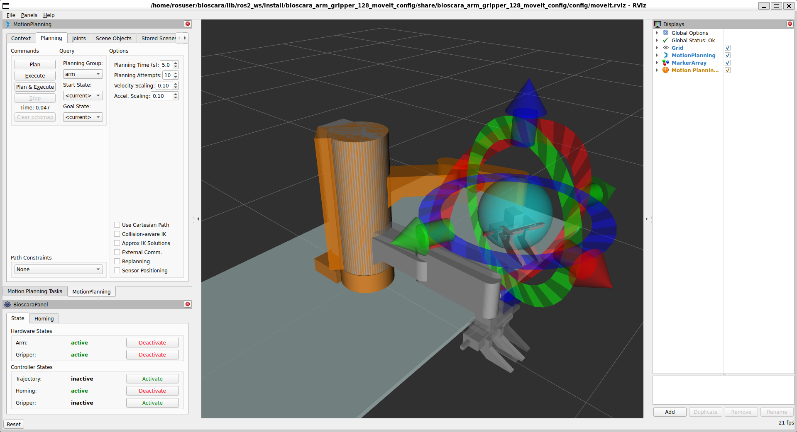
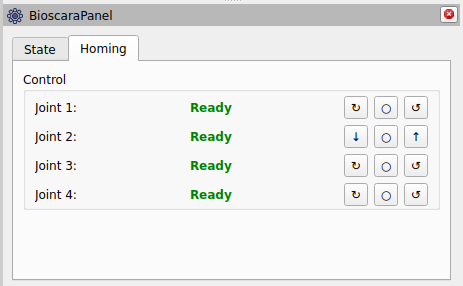
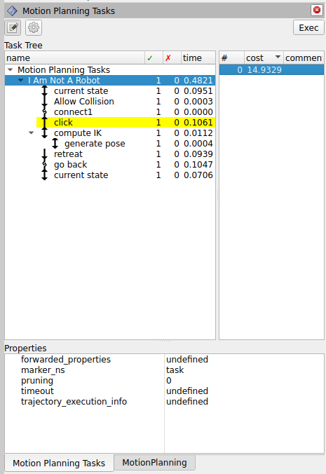
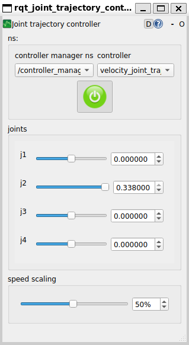

Operate the Robot
This document explains how to bring the robot into operation for manual and programmatic control. The document will decribe how to start the robot hardware as well as its emulation.
Prerequisites
Make sure that following prerequisites are fullfilled:
In order for the robot to operate, all software and system configurations must be installed as described in the installation guide.
The ROS2 workspace must be compiled as described in the build guide.
For hardware operation: The robot must be correctly assembled and all components are electrically connected. The latest hardware information can be found here
A stable wired network connection between the control PC/developers PC and the robot controller is established as described in the networking tutorial.
Connect to the Robot Controller
After a connection has been established to the robot controller, open a ssh session from the control PC:
ssh scara@<ip-adress>
Type the password dtubio when prompted and hit enter. You should now have a terminal session on the robot controller and you can proceed.
Starting the Robot
Warning
You are about to enable the robot! Make sure it is securely mounted and its workspace is clear!
Change to the lib/ros2_ws directory:
cd lib/ros2_ws
All following commands are relative to this directory.
Source the workspace packages:
source install/local_setup.bash
Launch the robot control nodes
To start all ROS2 nodes simultaneously launch the complete launch file:
ros2 launch bioscara_arm_gripper_128_moveit_config complete.launch.py
This will start the ros2_control node responsible for the control implementation and the MoveIt2 move_group node for trajectory generation.
Note
With no access to the hardware it is possible to emulate it by passing the use_mock_hardware:=true argument to the launch file:
ros2 launch bioscara_arm_gripper_128_moveit_config complete.launch.py use_mock_hardware:=true
Launch the RViz GUI
The RViz GUI is needed for vsizualization and to control the Bioscara hardware, to example home it. Since the robot controller does not have a desktop, the control GUI must either run on a seperate control PC or must be forwared via ssh. In both cases a stable and fast network connection is critical to ensure timely updates.
Using Window Forwarding
This method has the advantage that the external control PC does not need have ROS2 installed. A ssh client capable of X-forwarding is sufficient.
Open a second ssh session from the control PC to the robot controller with X-forwarding enabled:
ssh scara@<ip-adress> -X
Start the RViz GUI on the robot controller, it will be forwarded to the control PC:
ros2 launch bioscara_arm_gripper_128_moveit_config moveit_rviz.launch.py
Using an Networked PC with ROS2 installed
Using this method requires the control PC to have ROS2 installed, along with RViz2, the Bioscara RViz plugin, the MoveIt Panel and MTC Panel. The advantage is that the robot controller has less computation load, since it does not need to display the RViz process.
In this case it is sufficient to simply open a new local terminal session. Start the RViz GUI on the robot controller:
ros2 launch bioscara_arm_gripper_128_moveit_config moveit_rviz.launch.py
Alternative: Manually launching Nodes
If you experience problems with the complete launch file or to try differnent launch configurations, you can try to launch the components indiviudally. First launch the ros2_control node with the scene_bringup packages:
ros2 launch scene_bringup bioscara_arm_gripper128.launch.py use_mock_hardware:=true/false
Then launch the move_group seperately:
ros2 launch bioscara_arm_gripper_128_moveit_config move_group.launch.py
Preparing the Robot
You should now see the RViz GUI like this

The important panel are on the left side. On the top left you can find the MoveIt MotionPlanning and MoveIt-Task-Constructor Motion Plannining Tasks Panel. But before we get to that the robot has to be configured for operation with the bottom left Bioscara Panel.
Homing the Robot
If the robot has been power-cycled, its joint’s need to be homed again. To do this activate the homing controller under the “State” tab as displayed in the picture above. The navigate to the “Homing” tab where you should see all joints as “Not Homed”. During homing the joint will slowly drive towards its upper or lower limit where it will detect the collission and zero its encoder. You can select the direction through the buttons right of the joint label as it suits you best. Make sure that the joint can move freely and that it actually stops at its endstop. Repeat this until all joints report “Ready” as shown in the picture below:

Enabling the Controllers
Now with the robot homed it is almost ready for operation. Under the “State” tab, deactivate the homing controller then activate the trajectory and gripper controller. The arm and gripper hardware must also be active. All joint motors are now engaged and can not be backdriven. To backdrive the robot deactivate the Arm hardware.
Manually Create Trajectories
It is possible to manually plan trajectories, execute them, compare path planner performance and more with the MotionPlanning panel. The official tutorial gives a good introduction hot to use it.
In short: Use the handles to move the orange goal robot state into a desired pose, then press “plan” and/or “execute” under the “Planning” tab. By default the OMPL RRTConnect path planner is used to plan the paths, alternatives can be selected under the “Context” tab.
Planning Scene
Under the “Scene Objects” tab the planning scene can be modified. Collision objects can be added, modified and removed from it, or a a setup can be imported. Always press “publish” to commit the changes to the planning scene.
Planning and Executing a MTC Task
The MoveIt-Task-Constructor (MTC) is used to plan more complex trajectory sequences. The tasks are created in the dalsa_motion_plans package. Python scripts are the easiest to edit and create, although it seems that not all C++ methods are fully supported through the Python bindings. The Python scripts are in the dalsa_motion_plans/scripts directory.
The MTC can be run either on the robot contoller or the control PC since it is not realtime-critical. Exectute the following steps on the robot controller or control PC respectively.
Adding a new MTC Task
A sort-of correct documentation for the Python bindings can be found here. Using these recipes complex applications can be programmed. Some examples can be found in the /scripts dir, have fun!
To create a new Python script with a new MTC task the following needs to be done:
Create the cool_task.py under dalsa_motion_plans/scripts
Add the script to the dalsa_motion_plans/CMakeLists.txt. Find the following lines and append the the cool_task.py to the list of installed files.
install(PROGRAMS
scripts/IAmNotARobot.py
scripts/PickPlace.py
scripts/PickPlace_continous.py
scripts/PickPlace_markers.py
scripts/cool_task.py # <===== Append here
DESTINATION lib/${PROJECT_NAME})
In order to make the script available rebuild the dalsa_motion_plans package:
colcon build --symlink-install --mixin release --packages-select dalsa_motion_plans
Executing the Task
From a new terminal, navigate to the lib/ros2_ws worspace and source it source install/local_setup.bash. Then you can execute any MTC task by invoking
ros2 launch dalsa_motion_plans run.launch.py exe:=cool_task.py
where the exe argument specifies the name of the script to execute.
If the task planned succesfully, it is published to the “/solution” topic and displayed in the Motion Planning Tasks MTC Panel shown below. For each task a number of solutions can be computed which can be indivdually inspected and, if one is selected, executed by pressing the Exec button.

Common Problems
Some common issues and remedies are described in the following.
General Launch Problems
If nodes fail to launch and no clear error message is printed in the console try one or a combination of the following:
Open a new terminal and source the workspace again
Build the workspace or the affected packages again and execute the above step.
Remove the affected packages from the lib/ros2_ws/install/<package> and lib/ros2_ws/build/<package> directory and execute the above steps.
Motion Planning Fails
This can have many reasons, the exact move_group error usually helps to identify the issue.
Start state out ouf bounds: If a joint is just a tenth of a millimeter outside its limit, motion planning will fail. If the gripper is causing the violation, manually send a new width command through the console
ros2 action send_goal /gripper_controller/gripper_cmd control_msgs/action/ParallelGripperCommand "{command:{name:[gripper],position:[0.05]}}". If the problematic joint is on the robot arm and not J2, just deactivate the robot arm, move the joint away from the limit and reactivate the arm again. If the problematic joint is J2 it can not be moved by hand. Instead do the following: Open another terminal navigate to lib/ros2_ws/, source the workspace, and start the rqt_joint_trajectory_controller:ros2 run rqt_joint_trajectory_controller rqt_joint_trajectory_controller. Select the “controller_manager” and “velocity_joint_trajectory_controller”, enable it on the red button and manually drag the J2 set point away from the limit. This GUI can also be used for other purposes but it should never be active in parallel with an ongoing trajectory through MoveIt.

Start state collision: If a trajectory is planner immediatly after homing , the gripper links can be in a self-collision with link link_1, since the collision body is a primitive cylinder. Simply deactivate the arm and move the links out of collision. The collided links will be highlighted in red in RViz.
ros2_control Fails to Start
Sometimes, for yet unknown reasons, if the ros2_control node is launched from the complete launch file, it attempts to start the robot hardware despite the use_mock_hardware:=true has been set.
If that happens while no hardware is connected, the node will fail to start and control is impossible. Launching the ros2_control node separately as described in here seems to resolve this issue.
Homing Sequence not Starting/Finishing
As described in this bug report, under yet unclear conditions, the homing sequence is immediatly aborted after it has been started. The joint driver however assumes it is sill ongoing while the firmware has already finished it. This issues can be fixed by:
Stop the homing sequence by pressing the
obuttonRestart homing